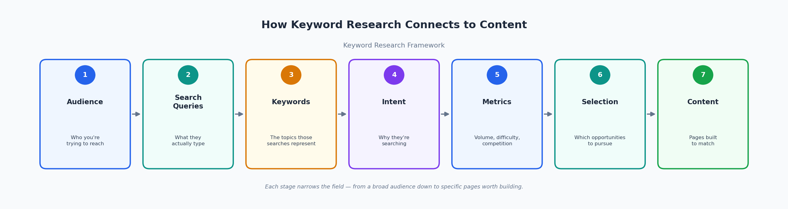
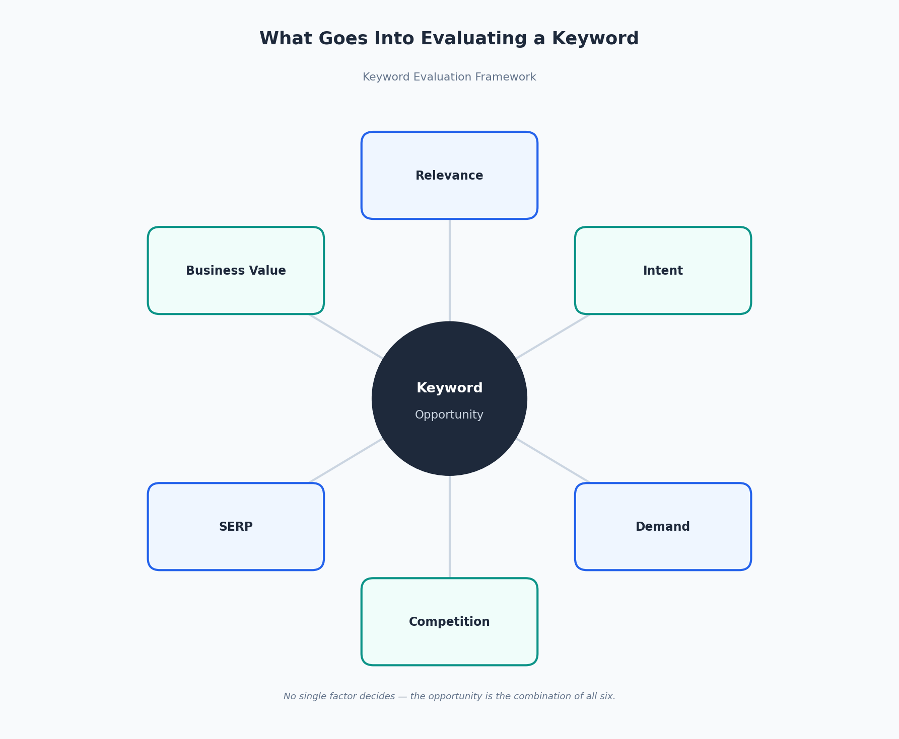
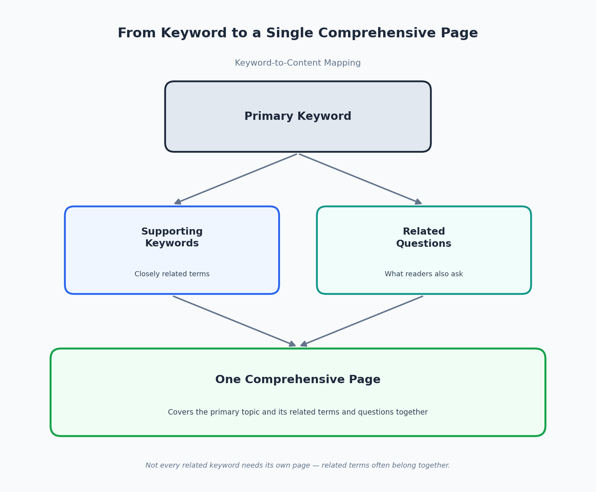

What Is Keyword Research? A Complete Beginner's Guide
Keyword research is the process of figuring out what words and phrases people actually type or speak into a search engine when they're looking for something, and then using that information to guide what content gets created. At its simplest, it answers a practical question: if you want someone to find your website, what are they searching for in the first place?
But a useful definition of keyword research has to go further than that. It isn't just about finding a list of popular search terms. It's about understanding why people search the way they do, how relevant a given search is to your business or website, how much competition already exists for it, and whether pursuing it is actually a good use of your time. Search volume -- the number of times a term is searched -- is one input into that decision, not the whole decision.
This guide walks through what keyword research actually involves, from the basic vocabulary (keywords, search queries, search intent) through the practical evaluation process (demand, competition, business value, SERP analysis) and into how research findings turn into an actual content plan. It also covers where keyword research is heading as search itself changes, and the mistakes that most commonly derail it. By the end, the goal is for "what is keyword research" to mean something concrete and usable, not just a textbook definition.
What Is Keyword Research?
Keyword research is the practice of identifying the terms and phrases your audience uses when searching, and then evaluating those terms to decide which ones are worth building content around. That evaluation is really the heart of it. Anyone can generate a long list of related search terms in a few minutes using a free tool. What separates keyword research from simply collecting keywords is everything that happens after the list exists.
A proper keyword research process typically involves finding relevant search terms and topics, understanding what someone actually means when they search a given term, checking how much genuine demand exists for it, figuring out the intent behind the search, looking at how competitive the opportunity realistically is, and then deciding which opportunities are worth pursuing given your resources and goals. Skipping any of these steps can produce a keyword list that looks impressive but doesn't actually lead anywhere useful.

What Is a Keyword?
A keyword, in the SEO sense, is a word or phrase that represents a topic someone might search for -- and that a piece of content is written to address. It's worth being precise about a few related terms, since they get used almost interchangeably in casual conversation but mean slightly different things.
A search query is the exact string of text someone types (or says) into a search engine at a specific moment -- "best running shoes for flat feet," for instance. A search term is usually used the same way, referring to the literal words someone searched. A keyword is a bit more abstract: it's the topic or concept that a group of similar search queries represents, which is why one keyword can cover many different phrasings of essentially the same search. Some SEO writing also uses the term keyphrase to describe a multi-word keyword, though in practice most people just say "keyword" regardless of how many words are involved.
A seed keyword is a broad starting term used to generate more specific keyword ideas -- something covered in more detail below. A long-tail keyword is a longer, more specific phrase that usually reflects a narrower search need, also covered in its own section. Understanding how these terms relate to each other matters because keyword research tools and reports use this vocabulary constantly, and confusing "keyword" with "search query" is one of the more common sources of beginner confusion.
Why Is Keyword Research Important?
Keyword research matters because it replaces assumptions about your audience with actual evidence of what they're looking for. Without it, content decisions tend to be based on guesswork -- what the business owner thinks is interesting, or what a competitor happens to be writing about -- rather than on what real people are actually typing into search engines.
Done well, keyword research helps you understand audience demand and what your potential visitors are genuinely looking for, identify content topics worth covering, match content to the intent behind a search rather than just its wording, discover opportunities you might not have considered, prioritize which topics to tackle first, improve the overall relevance of your site to the audience you're trying to reach, and connect content decisions back to actual business goals rather than treating content as a disconnected activity.
It's worth being direct about what keyword research does not do. It doesn't guarantee rankings, and it doesn't guarantee traffic on its own. Plenty of other factors -- content quality, site authority, technical health, competition, and how well the finished page actually serves the searcher -- determine what happens after a topic is chosen. Keyword research improves your odds by aiming your effort at real demand instead of guesswork; it isn't a promise about the outcome.
What Does Keyword Research Actually Analyze?
Once you have a list of candidate keywords, the real work is evaluating them across several factors. This process is often called keyword analysis in SEO. No single factor works well in isolation. A keyword can look strong on one measure and weak on another, which is why keyword research is a judgment process rather than a simple lookup.
- Relevance is how closely a keyword actually connects to what your business, site, or content is about. A keyword can have excellent numbers and still be a poor fit if it has nothing to do with what you offer.
- Search intent is the underlying reason someone is searching -- are they trying to learn something, find a specific website, compare options, or make a purchase? Content that doesn't match intent tends to underperform even when it's well written, because it isn't answering the question the searcher actually had.
- Search volume is an estimate of how often a term is searched over a given period. It indicates potential demand, but as covered in its own section below, it's far from the only thing that matters.
- Keyword Difficulty is an estimate, produced by SEO tools, of how hard it might be to rank for a given term based on the strength of pages currently ranking for it. It's a helpful signal, not a precise prediction -- also covered in more depth further down.
- Competition overlaps with Keyword Difficulty but is worth thinking about on its own: who else is targeting this term, and how well-resourced are they?
- Business value asks whether ranking for this keyword would actually matter to your business -- does it connect to something you sell, a problem you solve, or a decision your audience is making?
- Traffic Potential looks beyond the search volume of one specific phrase to the total realistic traffic a well-optimized page could earn, since a single page often ranks for many related variations of a query, not just one.
- Click Potential accounts for the fact that even a high-volume, low-competition keyword won't necessarily send many clicks to your site if the search results page is dominated by ads, direct answers, or other features that satisfy the searcher without a click.
- Trends refers to whether interest in a topic is rising, falling, or seasonal -- useful context for deciding when and how much to invest in a topic.
- SERP features are the non-standard elements that can appear on a results page -- things like People Also Ask boxes, image carousels, video results, or AI-generated overviews -- which affect both what "ranking well" looks like and how much organic traffic a top position actually delivers.
What Is Search Intent?
Search intent is the goal behind a search -- what the person actually wants to accomplish, as opposed to the literal words they typed. It's usually grouped into four broad categories.
- Informational intent means the searcher wants to learn something. A search like "what is keyword research" or "how does SEO work" falls here -- the person wants an explanation, not necessarily a product or a specific website.
- Navigational intent means the searcher is trying to reach a particular website or page they already have in mind, such as searching "Ascent Digital" to find that company's site directly rather than to learn about digital marketing in general.
- Commercial investigation sits between informational and transactional. The searcher is comparing options before making a decision -- something like "best keyword research tools" reflects someone evaluating choices rather than being ready to buy immediately.
- Transactional intent means the searcher is ready to take an action, often a purchase -- a search like "buy keyword research software" or "SEO audit pricing" signals someone close to a decision.
Matching content to intent matters because a beautifully written how-to article won't satisfy someone who was trying to buy something, and a product page won't satisfy someone who just wanted a plain-language explanation. One of the most reliable ways to check intent isn't to guess -- it's to look at what's actually ranking. If the current search results are dominated by product pages, that's a strong signal the intent leans transactional. If they're mostly blog posts and guides, that points toward informational intent. It's also worth acknowledging that intent isn't always a clean, single category. Some queries reasonably mix informational and commercial signals, and the SERP itself is often the best evidence of how Google is currently interpreting a given search.
How Do You Find Keyword Ideas?
Keyword ideas can come from more places than a single SEO tool, and relying on just one source tends to produce a narrower, less realistic picture of what your audience actually searches for.
Useful starting points include broad seed topics related to your business, Google autocomplete suggestions, related searches, and People Also Ask questions. Dedicated keyword research tools also play an important role by providing search volume and competition estimates at scale.
Looking at what competitors rank for can surface terms you had not considered. Google Search Console shows the actual queries already bringing people to your site. Your website's internal search function, if it has one, can also reveal what visitors are looking for once they arrive.
Beyond tools entirely, some of the most useful keyword ideas come directly from people: questions customers ask over email or chat, patterns that come up repeatedly in sales conversations, recurring themes in support tickets, discussions in relevant forums or communities, and conversations on platforms like Reddit where people describe problems in their own words rather than in "SEO-friendly" phrasing. Google Trends can help you understand whether interest in a topic is growing or fading. None of these sources is sufficient alone -- the strongest keyword research usually combines tool-based data with this kind of first-hand, real-world input.
What Are Seed Keywords?
A seed keyword is a broad, general term used as a starting point for generating more specific keyword ideas -- it's rarely a keyword you'd target directly with a single page, since it's usually too broad and too competitive. Think of it as a category rather than a destination.
For example, a seed keyword like "keyword research" can branch out into dozens of more specific ideas: "what is keyword research," "keyword research tools," "keyword research for beginners," "how to do keyword research for a blog," and many more. The seed keyword doesn't tell you exactly what to write -- it gives you a direction to start exploring, usually by feeding it into a keyword tool, autocomplete, or related-searches data to see what more specific variations exist underneath it.
What Are Long-Tail Keywords?
Long-tail keywords are longer, more specific search phrases, but it's a mistake to define them purely by word count. What actually makes a keyword "long-tail" is specificity -- it reflects a narrower, more precisely defined search need rather than a broad topic.
"SEO" is a short, broad, highly competitive term. "What is keyword research for a local service business" is a long-tail variation. It is longer, but more importantly, it is much more specific about what the searcher wants to know.
Long-tail keywords often have clearer intent because a specific phrase leaves less ambiguity about the searcher's needs. They can also attract a more precisely matched audience and may sometimes be less competitive than broader terms. However, this is not guaranteed. Plenty of long-tail phrases are still difficult to rank for, particularly in competitive industries.
How Do You Evaluate Keywords?
Once you have a set of keyword candidates, evaluating them is best treated as a sequence rather than a single check. A practical way to work through it:
- Relevance comes first -- does this keyword actually connect to what your business or content is about? If not, nothing else on this list matters much.
- Intent comes next -- what is the searcher actually trying to accomplish, and does that match the kind of page you'd be creating?
- Demand asks whether there's meaningful search volume behind the term, understanding that "meaningful" varies a lot by industry and audience size.
- Competition looks at who's already targeting this keyword and how strong those existing pages are.
- SERP means actually looking at the current search results page for the term, not just trusting a difficulty score in isolation.
- Business value asks whether ranking for this term would actually matter -- does it connect to a product, service, or decision relevant to your business?
- Opportunity is the conclusion you draw from everything above: given relevance, intent, demand, competition, SERP conditions, and business value together, is this keyword actually worth pursuing right now?

Working through keywords this way turns keyword selection into a deliberate decision rather than picking whatever term has the biggest volume number attached to it.
Why Is Search Volume Not Enough?
Search volume is probably the single most over-relied-on metric in beginner keyword research, mostly because it's the easiest number to look at and compare. But a high search volume doesn't automatically make a keyword valuable, and a low one doesn't automatically make it worthless.
A keyword also needs to be evaluated for relevance, intent, competition, business value, current SERP conditions, realistic traffic potential, click potential, and whether interest in it is stable, growing, or fading. A term can have enormous search volume and still be a poor choice if it isn't relevant to your business, if the intent doesn't match what you'd realistically publish, or if the SERP is dominated by a handful of extremely well-established sites that would be genuinely difficult to outrank any time soon.
Here's a simple hypothetical to illustrate the point -- not real data, just an illustration of the reasoning. Imagine a small accounting firm considering two keyword candidates: a broad, high-volume term like "taxes," and a more specific, lower-volume term like "quarterly tax payment deadlines for freelancers." The broad term might show a much bigger volume number, but it's dominated by government sites, national media, and large finance publishers, and it doesn't tell you anything specific about what the searcher needs. The narrower term has a fraction of the search volume, but it reflects a specific, well-defined need that the firm can address directly and realistically compete for. Search volume alone would point toward the wrong choice here.
What Is Keyword Difficulty?
Keyword Difficulty (often abbreviated KD) is a score, produced by SEO tools, that estimates how hard it might be to rank on the first page for a given keyword -- usually based on signals like the backlink profiles and general authority of the pages currently ranking for it. It's meant to give you a quick sense of whether a keyword is realistically within reach or likely to be a long, difficult climb.
It's worth understanding why different tools often show different KD scores for the exact same keyword: each tool uses its own data set and its own formula, weighting different signals in different ways, so there's no single universal "correct" difficulty number. Treat KD as a rough estimate that helps you compare keywords relative to each other within the same tool, not as a precise, portable measurement.
The most important thing to understand about Keyword Difficulty is this: it's an estimate, not a guarantee. A "low difficulty" score doesn't promise you'll rank, and a "high difficulty" score doesn't mean ranking is impossible -- it means the current top-ranking pages appear strong based on the signals that tool measures. This is exactly why manual SERP analysis, covered next, still matters even when you have a KD score in hand. A number can't tell you everything a quick look at the actual search results can.
How Do You Analyze the SERP?
SERP stands for search engine results page -- the actual page of results that appears when someone runs a search. Looking at the real SERP for a keyword, rather than relying only on tool metrics, is one of the most practically useful habits in keyword research, and it's something a beginner can start doing immediately with no special tools at all.
When you search a candidate keyword yourself, pay attention to the intent reflected in the results. Are you mostly seeing guides, product pages, local listings, or something else?
Look at the types of pages that rank. They might include blog posts, tools, forums, videos, or a mixture of formats. Consider the general quality and depth of the existing results and whether you could realistically create something as useful or better.
Also notice whether large, well-established brands dominate the results. That can signal a tougher competitive environment, although it does not automatically rule out the opportunity.
Finally, check for SERP features such as ads, featured snippets, People Also Ask boxes, video or image results, and AI-generated overviews. These features can affect how much attention and organic traffic traditional results receive.
The SERP is essentially a live snapshot of what a search engine currently considers useful for that specific query, which makes it more current and specific than any single metric. That said, it's worth being careful not to over-read one signal from it: the fact that a few well-known brands happen to rank for a term doesn't by itself mean brand authority is the only thing that matters. Relevance, content quality, and how well a page actually answers the query all factor in too.
What Is Traffic Potential?
Traffic Potential is a way of thinking about a keyword's opportunity that goes beyond the search volume of that one exact phrase. In practice, a single well-written page rarely ranks for only one keyword -- it often ranks for dozens or even hundreds of closely related variations, questions, and phrasings, each with its own (usually small) amount of search volume.
That means the realistic traffic opportunity behind a topic is often larger than the volume number attached to any single keyword suggests, because a comprehensive page can capture traffic from many related searches at once rather than just the one you originally had in mind. This is part of why keyword clustering, covered further down, matters: grouping related keywords together and building one strong page around the cluster tends to be more effective than chasing each individual phrase with its own thin, narrow page.
What Is Click Potential?
Click Potential addresses a different gap: even when a keyword has solid search demand, that demand doesn't automatically translate into organic clicks to your site. A growing share of searches are at least partly satisfied directly on the results page itself, before anyone clicks through to any website.
Several things can reduce the organic clicks available for a given search: paid ads sitting above the organic results, featured snippets or direct-answer boxes that give searchers what they need without a click, People Also Ask sections that absorb attention, and AI-generated overviews that summarize an answer right on the results page. None of this means a keyword with these features isn't worth pursuing -- plenty still are -- but it's a useful reality check against assuming that search volume translates one-to-one into visits to your site.
What Is Business Value?
Business value is the piece of keyword evaluation that's easiest to overlook when you're staring at a spreadsheet full of volume and difficulty numbers. The keyword with the biggest search volume isn't necessarily the best keyword for your specific business to pursue.
Business value depends on how closely a keyword connects to your actual products or services, how well it reflects a real need or problem your customers have, whether the intent behind it suggests any commercial interest, how likely a visitor arriving through that keyword is to eventually take a meaningful action, and whether you can honestly and naturally connect the topic to what your business offers -- rather than stretching a tenuous connection just because the volume looks appealing.
There's no universal formula that converts these factors into a single objective score. Different tools and practitioners weigh them differently, and reasonable judgment matters more than any specific system. What matters is asking the question directly for each keyword you're considering: if this page ranked and someone visited it, would that visit actually be worth something to the business?
What Is Keyword Clustering?
Keyword clustering is the practice of grouping closely related keywords together so they can be addressed by a single, more comprehensive page rather than scattered across many thin, overlapping ones. Keywords tend to belong in the same cluster when they reflect essentially the same search intent and when their search results substantially overlap -- meaning the same pages tend to rank for all of them.
Clustering matters because creating a separate page for every minor keyword variation usually backfires. It spreads your effort thin, creates pages that compete with each other for the same searches, and rarely produces the kind of comprehensive, authoritative content that both readers and search engines tend to favor. Grouping "what is keyword research," "keyword research meaning," and "keyword research definition" under one well-developed page, for instance, generally makes more sense than writing three separate, thinner articles that all say roughly the same thing. That said, clustering isn't an absolute rule. Some keywords that look similar on the surface actually reflect different intents or deserve their own dedicated page, so it's worth checking the SERP overlap rather than assuming every similar-looking phrase belongs together.
Primary vs. Supporting Keywords
Most well-built pages are organized around one primary keyword -- the main topic the page is built to address -- supported by a set of related supporting keywords, relevant questions, and closely connected subtopics that naturally belong on the same page.
For an article like this one, the primary keyword might be "what is keyword research," while supporting elements could include related terms like "what is a keyword," relevant questions like "how do you evaluate keywords," and subtopics like search intent or keyword clustering that a thorough answer would naturally need to cover. The goal of this structure is comprehensive coverage of a topic -- giving the reader a genuinely complete answer -- not repeating the primary keyword as many times as possible.
A strong keyword strategy uses supporting terms naturally, where they fit the sentence and add useful context. This is very different from forcing them in for the sake of hitting a keyword list. Keyword stuffing -- unnaturally repeating a term over and over -- tends to make content worse for readers and isn't something search engines reward.

How Does Competitor Research Help With Keyword Research?
Looking at what's currently ranking for your target keywords is a useful part of the research process, separate from the SERP-analysis habit covered earlier. Competitor research at the keyword-research stage can reveal which topics competitors are covering that you aren't, which keywords they appear to be ranking for, gaps in the market where nobody has produced a genuinely strong resource yet, what searchers in your space seem to expect based on how existing results are structured, and which content formats -- long guides, tools, comparison pages, video -- tend to perform well for a given topic.
The purpose here is understanding the competitive landscape and spotting real opportunities, not copying what's already out there. A competitor's existing article tells you a topic is worth covering; it doesn't tell you how to cover it well, and reproducing their structure or wording closely tends to produce a weaker, derivative version of something that already exists rather than something genuinely more useful.
How Does First-Party Data Improve Keyword Research?
Some of the most valuable keyword ideas never show up in a keyword research tool at all, because they come from the actual language your real customers use rather than from aggregated search data. This is often called first-party data, and it's worth treating as a core part of the process rather than an afterthought.
Useful first-party sources include the specific questions customers ask by email, chat, or phone. They also include recurring themes from sales conversations, patterns in support tickets, and the actual search queries already bringing visitors to your site through tools like Google Search Console.
Other useful sources include searches performed on your own website, the language customers use in reviews, comments on your content or social posts, and discussions in relevant online communities.
This kind of information matters because keyword databases are built from aggregated search behavior across the entire web, and they can miss the specific, sometimes unconventional language your actual audience uses, along with problems that are common in your specific niche but too small in volume to register clearly in a general-purpose tool. Combining first-party insight with tool-based data tends to produce a more grounded, realistic picture than either source alone.
How Do You Turn Keyword Research Into Content Strategy?
Keyword research only creates value when it shapes what gets built. The path from research to a useful page generally follows a consistent sequence.
Research surfaces keyword candidates. Evaluation narrows the list to the strongest options. Intent analysis determines what type of content each keyword needs. Clustering groups related keywords under shared topics. Content mapping decides which page should address each cluster.
Content creation then produces the page, while on-page optimization helps make the content useful for readers and search engines. Measurement tracks performance after publication, and updating keeps the research and content relevant as circumstances change.
In practice, a strong keyword strategy should influence several concrete decisions: which new pages are worth creating, which topics deserve priority given limited time and resources, what type of content best fits a given topic and intent, which existing pages might already be a reasonable home for a keyword, and which related topics make more sense grouped together on one comprehensive page.
Treated this way, keyword research stops being a standalone exercise and becomes the foundation that the rest of a content plan is built on.
Keyword Research in Modern Search
Search itself keeps evolving, and it's worth understanding how that affects keyword research without treating this as a separate topic from the rest of the guide. AI-generated overviews now appear directly on many search results pages, summarizing an answer before a searcher ever reaches a traditional organic listing. Search behavior is shifting toward longer, more conversational, natural-language queries -- closer to how someone would actually phrase a question out loud than the clipped, keyword-style phrasing common in earlier years. Search itself increasingly happens outside a traditional search engine entirely, through AI chat assistants, voice search, and platform-specific search bars.
None of this changes the core logic of keyword research -- understanding what people are looking for and why is still the foundation. What it does mean is that keyword research increasingly benefits from considering natural, question-based phrasing alongside shorter, more traditional keywords, and from recognizing that a strong, clear, genuinely useful answer to a topic matters across all of these surfaces, not just classic web search.
It's worth being cautious here about overclaiming: exactly how any specific AI system selects, weighs, or summarizes content isn't something that can be stated with confidence, and this guide isn't the place to speculate about the internal mechanics of any particular platform. The safer, more durable approach is the same one that's always worked reasonably well -- understanding real audience questions and answering them clearly.
How Often Should Keyword Research Be Updated?
Keyword research isn't something you do once and file away. Search behavior shifts, industries change, and a keyword list built a year or two ago can quietly go stale without anyone noticing until performance starts slipping.
A few situations tend to signal that it's worth revisiting: search behavior or terminology in your industry has noticeably changed, new products or services have launched that existing research doesn't account for, an existing page's performance has shifted in a way that's hard to explain, overall search demand for a topic appears to be rising or falling, the SERP for an important keyword looks meaningfully different than it did before, or business priorities have simply changed -- the kind of shift that often turns up during a broader SEO audit as well.
There's no single universal schedule that fits every business. A fast-moving industry might warrant a check every few months, while a more stable niche might only need a review once or twice a year. Think of this as a practical habit worth building in, rather than a fixed rule to follow mechanically.
Common Keyword Research Mistakes
A handful of mistakes account for most of the keyword research that ends up producing weak results.
Choosing keywords based purely on search volume, without weighing relevance or intent, tops the list. Close behind it is ignoring search intent entirely -- writing an informational guide for a term that searchers actually use when they're ready to buy, or vice versa. Blindly trusting a Keyword Difficulty score without ever looking at the actual SERP is another common trap, as is targeting keywords that have decent numbers but no real connection to the business. Skipping SERP analysis altogether -- never actually looking at what's currently ranking -- leaves you working from estimates instead of evidence.
Creating a separate, thin page for every minor keyword variation can dilute rather than strengthen a site. Clustering related terms is often a better approach.
Ignoring business value in favor of search volume can also lead to poor decisions. So can ignoring the actual language customers use and relying only on keyword-tool data.
Another mistake is treating keyword research as a one-time project. Search behavior changes, so important research should be revisited when circumstances change.
Keyword stuffing -- cramming a term into content unnaturally -- can hurt readability without providing a real benefit. Choosing keywords before understanding the audience can also produce a list that looks reasonable but does not reflect genuine searcher needs.
Finally, no single tool should be treated as absolute truth. Keyword data is one useful input among several.
Simple Keyword Research Checklist
Before committing to a keyword, it's worth running through a short set of questions:
- Is it relevant to the business?
- Does it match the target audience?
- What is the search intent behind it?
- Is there meaningful demand?
- How competitive does the actual SERP look?
- What type of content currently ranks for it?
- What is the realistic business value?
- Is there genuine traffic potential, including related variations?
- Could SERP features meaningfully reduce organic clicks?
- Should this keyword have its own dedicated page, or does it belong with others?
- Does it fit into an existing keyword cluster?
- Can genuinely useful, well-researched content actually be created for this query?
- Should this keyword be revisited and reviewed again later?
Conclusion
Keyword research is ultimately about understanding people -- what they're searching for, why they're searching for it, and what would genuinely be useful to them once they arrive. The goal was never to build the longest possible keyword list. It's to identify search demand that's actually relevant to your business, understand the intent behind it, realistically evaluate the opportunity, and use everything you learn to guide content that's worth creating.
Treated that way, keyword research becomes less of a one-time technical task and more of an ongoing habit -- one that keeps content decisions grounded in what real people are actually looking for, rather than in assumptions about what they might want. That habit, more than any single tool or metric, is what tends to separate content that genuinely serves an audience from content that was only ever built to chase a number.
Frequently Asked Questions
What is keyword research in SEO?
Keyword research is the process of identifying the terms and phrases people search for, and evaluating those terms for relevance, intent, demand, competition, and business value to decide which ones are worth building content around.
Why is keyword research important?
It replaces guesswork about your audience with evidence of what they're actually searching for, which helps you prioritize topics, match content to real intent, and connect content decisions to actual business goals rather than assumptions.
What is the difference between a keyword and a search query?
A search query is the exact, literal text someone types into a search engine at a given moment. A keyword is the broader topic or concept that a group of similar search queries represents.
Is high search volume always better?
No. A keyword also needs to be relevant, match a realistic intent, have manageable competition, offer genuine business value, and hold up once you look at the actual search results. Volume is only one factor among several.
What is Keyword Difficulty?
Keyword Difficulty is an estimate, produced by SEO tools, of how hard it might be to rank for a term based on the strength of the pages currently ranking for it. It's a helpful signal, not a guarantee, and different tools often produce different scores for the same keyword.
What is search intent?
Search intent is the underlying goal behind a search -- informational, navigational, commercial investigation, or transactional -- and it helps determine what kind of content or page best fits a given keyword.
What are long-tail keywords?
Long-tail keywords are more specific search phrases that reflect a narrower search need. They're defined by specificity, not simply by having more words, and while they're often less competitive, that isn't guaranteed for every long-tail phrase.
How many keywords should a page target?
Usually one primary keyword supported by closely related terms, relevant questions, and subtopics that genuinely belong on the same page. The goal is comprehensive, natural coverage of a topic, not hitting an arbitrary keyword count.
Can one page rank for multiple keywords?
Yes, and it's actually common. A single well-developed page often ranks for many related variations and questions, which is part of why Traffic Potential can be larger than the volume of any one specific keyword.
What is keyword clustering?
Keyword clustering is grouping closely related keywords that share intent and SERP overlap so they can be addressed by one comprehensive page, rather than spreading them across multiple thin, competing pages.
What tools can be used for keyword research?
Dedicated SEO keyword research tools are common, but useful data also comes from Google's autocomplete and related searches, Google Search Console, your site's internal search data, Google Trends, and direct sources like customer questions and competitor research.
Is keyword research still important with AI search?
Yes. The way people search is evolving, including more conversational and AI-assisted search experiences, but understanding what your audience is actually looking for and why remains the foundation of relevant, useful content.